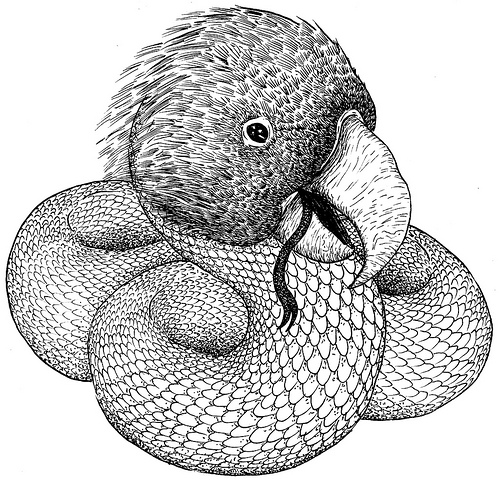

27 11 2013
É o nome da entidade da Mitologia Guarany protetora dos corpos d'agua e dos animais aquáticos.
Tem o corpo de uma serpente com uma cabeca enorme e um bico de papagaio. Nao por acaso é o nome de meu mais novo companheiro das longas jornadas na frente do computador. Não só pelo trabalho, mas também pela diversão de programar um pouquinho.

Chegou ontem meu ThinkPad X230 que dará um tempo para o pequeno mascote (Acer One) que até agora foi meu grande companheiro de aventuras! hehehe
Obviamente a instalacao de um Linux em maquinas preparadas para receber de braços abertos aquele carinha mala das "Janelas".
Algumas leituras na internet e foi o suficiente para cortar o mal pela raiz(hehehe) e arrancar as "janelas' de lá e instalar grandes portas! Pq nao?? hehehe
Meu Debian 7 é essa grande porta para o mundo. Com tudo aparentemente funcionando. Bluetooth, wireless, backlight do teclado, mousepad, trackpad, som. Um Chuchu! hehehe
Como as coisas ainda estao atualizando aqui por trás, eu tô escrevendo isso no PythonAnywhere onde vou rodar o pelican e depois empurrar tudo pro github.
Viva a internet! Que aqui na Franca nao eh a coisa mais legal de tudo( =/ ).
Ate mais!
blog comments powered by Disqus